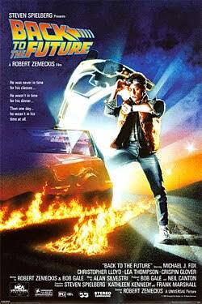

ficção científica, aventura e comédia.
1985
Livre.
Marty McFly (Michael J. Fox) é um jovem adolescente de uma pequena cidade californiana que é transportado acidentalmente para o ano de 1955. Isso acontece quando uma experiência com uma máquina do tempo — construída em um carro DeLorean pelo seu amigo, o excêntrico cientista Dr. Emmett Brown ("Doc") — dá errado. Preso no passado, Marty conhece as versões jovens de seus pais, George e Lorraine. O grande problema surge quando, acidentalmente, sua mãe Lorraine se apaixona por ele, e não por George. Essa alteração ameaça a linha do tempo e faz com que a própria existência de Marty passe a correr perigo (ele começa a sumir de uma fotografia de família). Para garantir que continue existindo, Marty precisa bancar o "cupido" e fazer com que seus pais se apaixonem no baile da escola. Ao mesmo tempo, ele precisa encontrar uma forma de pedir ajuda ao "Doc" Brown de 1955 para conseguir energia suficiente (um raio que atingirá a torre do relógio da cidade) e mandar o DeLorean de volta para 1985.
De volta para o Futuro é uma otima opção para quem deseja um filme classico e antigo,com uma historia envolvente envolvendo uma viagem no tempo, e acompanhando uma boa opção para quem gosta de ficção científica.